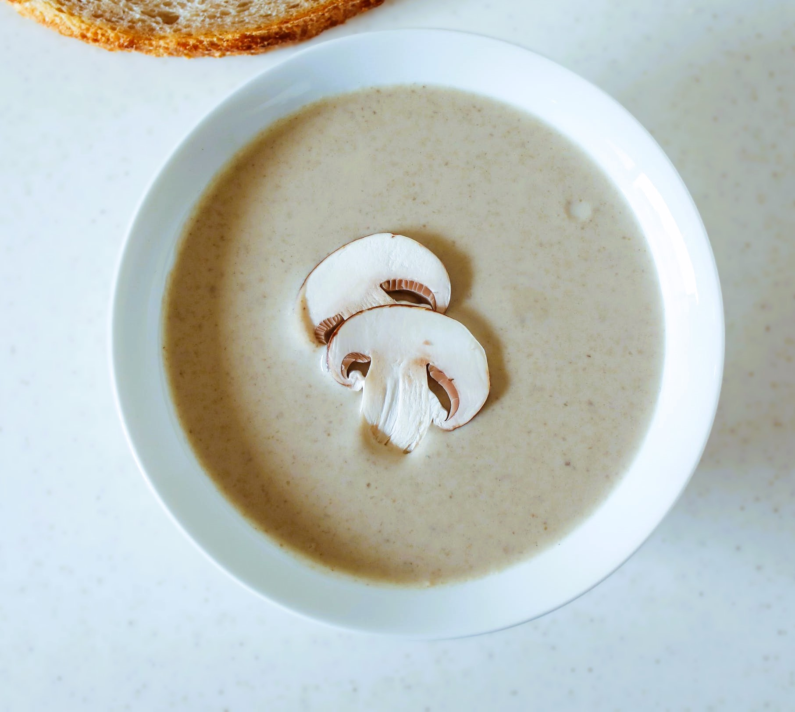

Creamy Mushroom Soup Recipe

Description
Creamy mushroom soup using canned pantry staples.
Ingredients
- 8 oz canned mushrooms (drained)
- 10.5 oz Cream of Mushroom canned soup (I use Campbell's)
- 1/2 yellow onion (Julienne cut)
- 3 tbsp butter
- 6 oz canned evaporated milk
- 2 tsp heavy cream
- 1 cup water
- 1 tbsp coconut oil
- seasoning salt and pepper to taste
Steps
- Julienne cut or dice half a yellow onion and drain canned mushrooms.
- Add mushrooms, onion, and butter to saucepan and saute at medium-high heat until onion starts to brown a little. If onion begins to stick to the pan beforehand, add a little bit of water.
- Add the canned soup, evaporated milk, and water to the pan and stir.
- Now add the heavy cream and coconut oil (or oil of choice) and stir to combine once again.
- Add seasoning salt (or plain salt) and pepper to taste.
- Bring soup to a boil, then stir and reduce heat.
- Simmer soup at a medium-low heat for 2 more minutes then serve.
Return to homepage